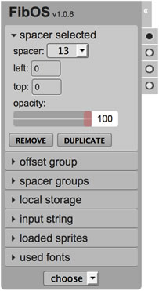
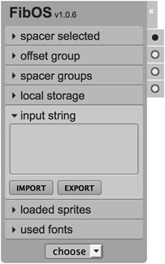
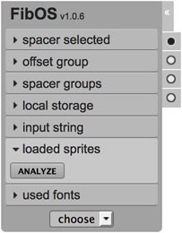

FibOS
Usage | Build | Contributing
Bookmarklet UI Tool for easily check layout implementations.
Usage
In order to load the tool, use this string as "location" for the bookmarklet:
javascript:(function(brands,tags,brand,tag){!function(a,b){function c(a,b){var c,d=null;return b.forEach(function(b){c=a.length,b.substr(0,c)==a&&(d=b)}),d}function d(){var a="1.7.2",b=!0;if("undefined"!=typeof jQuery){var c=parseInt(a.split(".")[0]),d=parseInt(a.split(".")[1]),f=parseInt(a.split(".")[2]),g=jQuery.fn.jquery,h=parseInt(g.split(".")[0]),i=parseInt(g.split(".")[1]),j=parseInt(g.split(".")[2]);b=c>h||d>i||f>j}if(b){var k=document.createElement("script");k.type="text/javascript",k.src=["https://code.jquery.com/jquery-",a,".min.js"].join(""),e.appendChild(k)}}var e=document.getElementsByTagName("head")[0];if(!e)throw new Error("Attempt to load FibOS on a page without head tag!");d(),a||(a=prompt("Choose brand\n[ "+brands.join(" | ")+" ]\n\n(leave it blank for '"+brands[0]+"')")||brands[0]),b||(b=prompt("Choose tag\n[ "+tags.join(" | ")+" ]\n\n(leave it blank for '"+tags[0]+"')")||tags[0]),-1===brands.indexOf(a)&&(a=c(a,brands)||a),-1===tags.indexOf(b)&&(b=c(b,tags)||b);var f=["https://rawgit.com/VenereDotCom/FibOS/",b,"/public/fibos-latest-",a,".min.js"].join(""),g=document.createElement("script");g.type="text/javascript",g.src=f,e.appendChild(g),console.log("loaded",f)}(brand,tag);}(["hotels","venere"],["latest","staging"],null,null));It will then ask a couple of desired options:
-
brand : as values it accepts
brandsobject keys from package.json - version : it can be any tag from git
For the version question however is preferable to use only the following values:
-
latest : to use the tool at its latest release
- staging : to try the newest implementations not yet released as latest
If parameters are passed in the bookmarklet instead of null, first or second or both questions will be skipped.
This minified version of prompt.js can be obtained using the grunt prompt command.
Once the bookmarklet is loaded, the GUI will be appended to the body and it will be visible in the upper-left corner of the page. Starting from v1.0.3+ it can also be dragged around the page clicking on the title.

The tool has a dropdown for chosing spacers, 7 panels to manage them along with other features and 4 toggles on the right side to show/hide specific features.
The 7 panels are as follows:
The 4 toggles on the right side enable features as follows:
Select dropdown
Using the dropdown, a spacer can be chosen and then dragged/dropped onto the page.
Once the spacer is dropped, it still can be dragged around the page.
When a spacer is clicked (or when it's just dropped) it can be moved around using arrow keys:
- arrows moves it by 1 pixel
- while SHIFT key is pressed moves it by 10 pixels
- while ALT key is pressed moves it by 0.5 pixel (for retina displays)
Panels
Spacer Selected

Here the user can modify a specific spacer (already dropped onto the page).
The user can:
- change the spacer value
- change the spacer position (top and left)
- change the spacer opacity
- remove or duplicate the spacer (also using shortcuts respectively:
ALT+XandALT+D)
Offset Group

Here the user can offset a full group of spacers.
Additionally the user can select an inner set of spacers for the selected group checking the 'select inner group' option.
Spacer Groups

From here the user can choose between groups of spacers.
Once the first spacer is dropped onto the page, the first default group is created named 'spacerGroup_0', and then it can be renamed or removed using the relative buttons.
While new spacers are dropped when 'none' group is selected, the tool creates a new group named 'spacerGroup_N', where N is an incremental number for each newer group.
The user will always have the ability to choose a group from the list.
Local Storage

Using HTML5 localStorage feature, the user can save the current spacers groups or restore the previously saved ones.
Once the 'restore' button is pressed, the panel 'spacer groups' will be open showing all groups restored.
Input String

In this panel the user can export in json format the current spacers groups (shown in the browser's console).
The user can also import a group set of spacers using the same json string returned after 'export' is clicked (useful for sharing spacers groups).
Loaded Sprites

Once the 'analyze' button is pressed, the tool checks for all DOM elements with a css background-image property set and stores sprites in a checkable list.
Checking a sprite from the list, the tool will show the selected sprite (or image) with red semi-transparent boxes representing the actual used pixels.
This is useful to check for re-usable areas of a sprite, overlapping areas, wrong areas set, and so on.
Used Fonts
Once the 'analyze' button is pressed, the tool checks for all DOM elements with css font-family property set and stores them in a checkable list.
Checking a font-size from the list, the tool will show the corresponding texts with a red bordered box.
Toggles
Spacers
Click here to show/hide spacers.
Overlay
Click here to show/hide a dark semi-transparent overlay, in order to see all spacers more clearly.
Rulers
Click here to show/hide rulers.
Once the rulers are shown, from both the horizontal or vertical ruler it can be dragged-in a new lineguide.
Once a lineguide is dropped onto the page, it can be moved with the mouse or arrow keys:
- arrows moves it by 1 pixel
- while SHIFT key is pressed moves it by 10 pixels
- while ALT key is pressed moves it by 0.5 pixel (for retina displays)
Font-Info
Click here to show/hide the Marker feature.
While this toggle is active, the user can click on any text in the page revealing 2 type of informations:
- a cyan blue semi-transparent box over the text, highlighting its block
- a small box on top of the text with font-family, font-weight and font-size css properties
Enabling this toggle, will show all Markers alrady placed as well as enable the click event (which will prevent defaults, eg. for links).
Disabling this toggle, will hide all Markers already placed as well as disable the click event.
Build
First of all, NodeJS should be installed.
Once the project is cloned, go into the project's root folder and run:
npm install -g grunt-cli
npm install
grunt deploy
grunt-cli is the Grunt Command Line Interface needed to run Grunt tasks.
With npm install all node packages needed by the compiler will be installed into node_modules/ folder.
With the grunt deploy command, all files for the project will be created under the build/ (both minified and full, for debugging) and all the minified will be also copied into public/[version]/ folder along with *-latest.min.js version in public/ folder.
Eg. With the version 1.0.2, running grunt deploy will produce this file tree:
public/
|- fibos-latest.min.js
|- fibos-latest-hotels.min.js
|- fibos-latest-venere.min.js
|- 1.0.2/
|- fibos-1.0.2.min.js
|- fibos-hotels-1.0.2.min.js
|- fibos-venere-1.0.2.min.js
|- widgets/
|- uiMarker-1.0.2-min.js
|- uiRuler-1.0.2-min.js
|- uiSlider-1.0.2-min.js
|- uiSpacer-1.0.2-min.js
|- uiSpriter-1.0.2-min.js
|- uiWidgets-1.0.2-min.js
Loader prompt version
| command | notes |
|---|---|
grunt prompt |
minifies the bookmarklet with custom params (ie. prompt:[brand]:[tag]) |
eg:
grunt prompt:venere will have the loader to ask only for tag and assuming the brand to be venere.
grunt prompt::latest will have the loader to ask only for brand and assuming the tag to be latest.
grunt prompt:hotels:staging will have the loader to ask nothing, assuming the brand to be hotels and the tag staging.
..and so on..
Folder cleaners
Dynamic folders are used as follows:
- target: (git ignores it) temporary folder to host processing files
- build: (git ignores it) final folder to host built files (both minified and debuggable ones)
- public: (git stages it) final folder only for minified files
| command | notes |
|---|---|
grunt clean:target |
remove target/ folder |
grunt clean:build |
remove build/ folder |
grunt clean:deploy |
remove public/[version]/ folder (and all the public/*-latest.min.js files) |
grunt clean:all |
removes ALL dynamic folders (build/, target/, public/[version]/) |
Single Widget builders
| command | notes |
|---|---|
grunt widget:marker |
build/minify MARKER widget into build/[version]/widgets/
|
grunt widget:ruler |
build/minify RULER widget into build/[version]/widgets/
|
grunt widget:slider |
build/minify SLIDER widget into build/[version]/widgets/
|
grunt widget:spacer |
build/minify SPACER widget into build/[version]/widgets/
|
grunt widget:spriter |
build/minify SPRITER widget into build/[version]/widgets/
|
All Widgets
| command | notes |
|---|---|
grunt widgets-all |
build/minify ALL widgets into build/[version]/widgets/
|
grunt widgets-test |
build/minify ALL widgets with test initializer into build/[version]/widgets/
|
Full builders
| command | notes |
|---|---|
grunt build |
build/minify FibOS with default initializer into build/[version]/
|
grunt build:venere |
build/minify FibOS with VENERE initializer into build/[version]/
|
grunt build:hotels |
build/minify FibOS with HOTELS initializer into build/[version]/
|
grunt build-all |
build/minify FibOS with ALL initializers and ALL widgets into build/[version]/
|
grunt deploy |
build/minify ALL into build/[version]/ and copy only minified into public/[version]/
|
With grunt deploy will be created also all *-latest.min.js files per brand into public/ folder.
Contributing
Custom initializer
To set up a new initializer (as for venere or hotels already set) please follow these steps:
add the new brand under
pkg.brandsintopackage.jsonfile (kay/value pair is brandName/brandMsg)
note: the brandMsg will be used in the final minified file as comment in this form:
/** built for <%= brandMsg %> **/create the new init file under
src/app/init/
note: the initializer file serves as options overrider for each widget that needs to be customized. TheFibOS()constructor accept a selector as first parameter so that the whole tool works only inside of it (should be the main website wrapper element selector, ifnullthe tool will work forbodyselector).enhance the
build-allgrunt task into the Gruntfile (this is optional though recomended)
note: if the brand "newbrand" is intended to be added, add thebuildtask with the new brand as parameter, so that Grunt can append the correct initializer found insrc/app/init/fibos_newbrand.js, or simply rungrunt build:newbrandin command line.
eg. for a brand named newbrand the file src/app/init/fibos_newbrand.js should be created with following content as example:
/* [1] : package.json */
//...
"brands": {
"hotels":"HOTELS.COM",
"venere":"VENERE.COM",
"newbrand":"MY PERSONAL COMPANY"
},
//...
/* [2] : src/app/init/fibos_newbrand.js */
var myOptions = {
logEvents: true,
uiSpacer: {spacersList:[5,10,15,20,25,30,35,40],spacerMin:1},
uiRuler: {rulerWidth:8},
uiMarker: {taglist:{a:false,input:false,dfn:true}},
uiSpriter: {domain:'img.mydomain.com'}
};
var fibos = new FibOS('#elemId.elemClass', myOptions);
/* [3] : Gruntfile.js */
// ...
grunt.registerTask('build-all', [
'clean:build', 'build', 'build:hotels', 'build:venere', 'build:newbrand',
'widget:marker', 'widget:ruler', 'widget:slider', 'widget:spacer', 'widget:spriter', 'widgets-all'
]);
// ...Credits
Created by Fabio Di Monte, with thanks to: Daniele Amurri, Simone Rescio, Gianluca Bargelli, Claudio Corridore, Francesco Saverio Ferrara.
Legal
This project is available under the Apache 2.0 License.